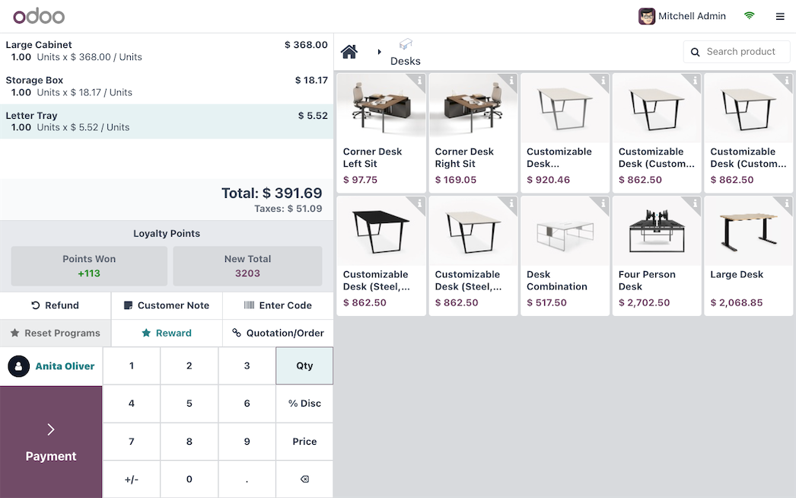
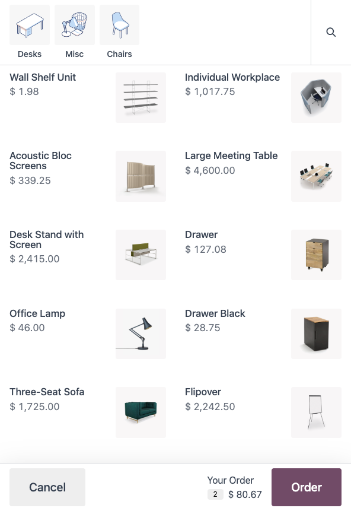

TechNext configures Odoo POS around Casa Escondida's restaurant, bar and beach deck — orders, kitchen tickets and payment on one screen — and posts every peso straight to the guest's room folio, so the bill is settled once, at check-out.

Your servers pick it up in a single shift, yet everything a busy service demands is one tap away — so the team can focus on the guest, not the till.



Fewer queues on the busiest nights. From a kiosk by the dive shop or their own phone at the table, guests can browse the menu, place their order and pay — freeing your floor staff to look after the room after a long day on the boat.
Reward the divers who come back season after season. Run points, vouchers and gift cards, and settle a refund to an eWallet instead of the cash drawer to protect the day's takings while keeping guests happy.
One tidy flow across every channel. Guests pre-order packed lunches for a day trip or drinks for the deck, and large group orders land on a preparation screen so the kitchen can get ahead before the boats come in.


iPad at the bar, phone on the deck, a proper terminal at reception — and it pairs with barcode scanners for the dive-shop retail.
If the Anilao wifi drops mid-service, orders keep going through and sync automatically the moment you're back online.
Set up reward programs once and run them consistently at the restaurant, the bar and the beach deck.
Cash, cards, and local e-wallets like GCash and Maya — TechNext connects your chosen gateways during setup.
Separate cashier logins secured by PIN or badge, so every sale ties back to a person.
Turn any receipt into a proper invoice for corporate dive trips and group bookings — print it or send it by email or QR code.
Start at the counter, then switch on the rest of Odoo only when Casa Escondida is ready for it.